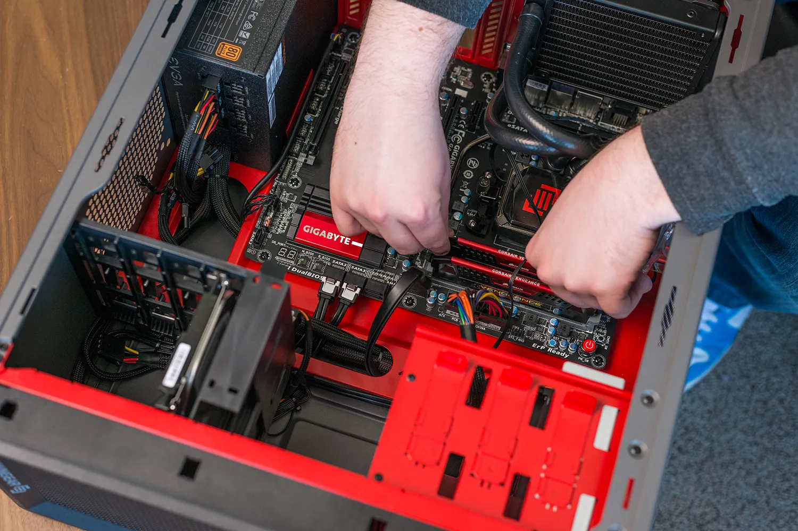

My Interests & Hobbies
I have many interests and hobbies, inlcuding playind video games, playing soccer. and creating stuff on TinkerCad. I play a variety of video games, unlcuding Roblox, Rocket League, Fortnite, and more. I play for a soccer team in Ridgefield Park, and I enjoy it a lot. In my free time, I like to use my 3D printer at home and create cool gadgets.
Gaming
I am a very diverse gamer, as I like playing story mode games aswell as pvp. Games are what inspired me to want to start coding, as I found it interesting. I am excited to see where my love for video games takes me.
Favorite Games:
-
Roblox- I love the diversity of games, as they have everything you could ever want.
-
Red Dead Redemption 2- I enjoy the plot, and it keeps me entertained.
-
Gang Beasts-I enjoy going pu against my friends in this silly game, competing to stay alive on cool maps.
-
Fortnite-Although the plot isn't that great, it is a mix of fun and creative gameplay, as well as competitve pvp with 100 players per game.
What I love About Gaming: I enjoy the complex but fun storytelling in games, as well as the competitive pvp to win matches, as it keep me entertained and hooked.
Technology & Gadgets

Although I have never built a pc, my dream is to do so. On Youtube, I like to watch people build them and learn the process of it. I also enjoy learning about new ands improved technology devices, as it is something that fascinates me.
Tech Interests:
-
Watching people build computers.
-
Learning how to program.
-
Learning about new and improved technology.
-
Learning how to use high tech machinery at my brothers job.
Sports and Fitness
Being healthy and staying active is very important. I have played soccer my entire life. I recently started playing for a team on basketball also. On soccer, I am a team captain, and it has helped me to learn responsibilty, teamwork, and accountability. I believe that people should take responsibility and accountability for their mistakes, and their teammates should make it known to them.
Activites I Enjoy:
-
Playing soccer with my friends and team.
-
Playing basektball with my friends and team.
-
Going to the Park
-
Watching Soccer (Specifically Premier League)
Why Sports Matter: They help me to stay active and in shape, and allows me to keep a good mindset. I like having gym in the morning because it wakes me up and gets me prepared for the rest of the day.
How My Interests Connect to Computer Science
All of these interests connect to computer science in many different ways. Gaming was what peaked my interest for computer science, and made me want to learn about it. Technology, increased my curiosity about coding and technical machinery, and sports helped me learn how tu use teamwork, hard work, and perseverance to get to where I am at today.